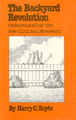

<body bgcolor="#FFFFFF" text="#000000" link="#0000FF" vlink="#CC0000" alink="#CC0000"><center><hr width="350" size="1" align="center" noshade>A comprehensive, in-depth look at the origins, development, and themes of the new citizen movement<hr width="350" size="1" align="center" noshade><p><a href="https://cdcshoppingcart.uchicago.edu/Cart/ChicagoBook.aspx?ISBN=9780877221920&&PRESS=temple" target="_top">Buy this book!</a> | <a href="https://cdcshoppingcart.uchicago.edu/Cart/Cart.aspx?PRESS=temple" target="_top">View Cart</a> | <a href="https://cdcshoppingcart.uchicago.edu/Cart/Cart.aspx?PRESS=temple" target="_top">Check Out</a></p><p></p></center><!--none//--><h1>Backyard Revolution</h1>
<H2>Understanding the New Citizen Movement</H2>
<h3>Harry C. Boyte</h3>
<P>cloth 0-87722-192-8 $29.95, Nov 80, <FONT COLOR=#990033>Out of Print</FONT>
<br>paper 0-87722-229-0 $16.95, Jun 81, <FONT COLOR=#990033>Out of Stock Unavailable</FONT>
<BR> 288 pp
</P><BLOCKQUOTE><I>"...a journey of discovery and elation...a throbbing catalogue of civic opportunities to get involved and extend the depths and frontiers of self-government."</I>
<BR>&#151<B>Ralph Nader</B><I></I></BLOCKQUOTE>
<P>For some time, the American public seemed generally unconcerned and passive when it came to political affairs&#151whether local or national in scope. It was commonly felt that the average citizen was preoccupied only with private matters. By the mid- and late 1970s, however, an identifiable citizen movement was beginning to grow out of spaces as personal and immediate as one's own backyard or block.
<P>This book offers the first comprehensive, in-depth look at the origins, development, and themes of the new citizen movement. It draws on dozens of interviews with local activists and national leaders of the movement to make the new forms of grassroots organizing come alive: here is what it feels like for a middle-aged housewife to face down a local city council; for a secretary to fight for a wider voice in office decision-making; for a campus radical to begin working among blue-collar ethnics; for a desperately poor Hispanic ghetto community to gain a sense of power and hope.
<P>Harry C. Boyte examines the new movement in American politics known variously as the neighborhood movement, the citizen revolt, grassroots politics, or democracy in action. Whatever it may be called, it has been characterized recently by innumerable forms of protest, self-help, and community-building that have flourished at the neighborhood level. Coupled with this new citizen activism is a new generation of populist politicians championing the interests of ordinary people against unresponsive corporate and governmental bureaucracy.
<BR>&nbsp;<h2>Reviews</h2>
<P><I>"An important contribution to our understanding of how at least 20 million average Americans have managed to organize themselves around issues of local concern."</I>
<BR>&#151<B><I>The New York Times Book Review</I></B>
<P><I>"A critically important book for the eighties."</I>
<BR>&#151<B><I>Social Policy</I></B>
<P><I>"</I>The Backyard Revolution<I> is necessary reading&#133Clearly this is visionary politics for an age of sophisticated despair."</I>
<BR>&#151<B><I>New Republic</I></B>
<BR>&nbsp;<h2>Contents</h2><P>
<P>Preface and acknowledgments
<BR>Introduction: the making of a citizen revolt
<BR>Repairing America's roots: the changing tradition of community organizing
<BR>Protecting the public: the citizen activists
<BR>Solidarity forever: citizen action at the workplace
<BR>The economics of self-reliance
<BR>Citizen politics
<BR>Building a new culture
<BR>Beyond the marketplace imagination
<BR>Appendixes
<BR>Notes
<BR>Index
</P><BR>&nbsp;<H2>About the Author(s)</H2>
<P><B>Harry C. Boyte</B> is a prominent political activist and theorist. His writings on organizing and political theory have appeared in <I>The New York Times</I>, <I>Social Policy</I>, <I>The Progressive</I>, <I>In These Times</I>, <I>Democracy</I>, and many other publications. He now directs the Citizen Heritage Center. He is also author of <I><A HREF="393_reg.html" TARGET="_top">The New Populism: The Politics of Empowerment</A></I> (co-edited with Frank Riessman) and <I><A HREF="1278_reg.html" TARGET="_top">Building America: The Democratic Promise of Public Work</A></I> (with Nancy N. Kari).</P>
<BR><H2>Subject Categories</H2>
<p><A HREF="/tempress/american.html" TARGET="_top">American Studies</a>
<BR><A HREF="/tempress/history.html" TARGET="_top">History</a>
</p>
<p align="center"><a href="https://cdcshoppingcart.uchicago.edu/Cart/ChicagoBook.aspx?ISBN=9780877221920&&PRESS=temple" target="_top">Buy this book!</a> | <a href="https://cdcshoppingcart.uchicago.edu/Cart/Cart.aspx?PRESS=temple" target="_top">View Cart</a> | <a href="https://cdcshoppingcart.uchicago.edu/Cart/Cart.aspx?PRESS=temple" target="_top">Check Out</a></p><p><font face="Arial" size="1"><a href="copyright.html" onMouseOver="window.status='Web Copyright Policy';return true;" onMouseOut="window.status=''" title="Web Copyright Policy">&copy;</a> 2015 <a href="http://www.temple.edu" target="new" onMouseOver="window.status='Link to Temple University home page';return true;" onMouseOut="window.status=''" title="Link to Temple University home page">Temple University</a>. All Rights Reserved. http://www.temple.edu/tempress/titles/212_reg.html</font></p>